Diseño Multimedia
Proyectos visuales enfocados en branding, ilustración, diseño UI/UX y composición digital.
Desarrollo piezas gráficas y experiencias visuales para web y móvil, integrando estética, funcionalidad y
comunicación visual.
Mi trabajo abarca desde el diseño de interfaces y prototipado de aplicaciones, hasta la creación de piezas
publicitarias y conceptos de marca, explorando soluciones visuales coherentes y orientadas a la experiencia del
usuario.
Publicidad
Desarrollo de identidad visual y composición gráfica.
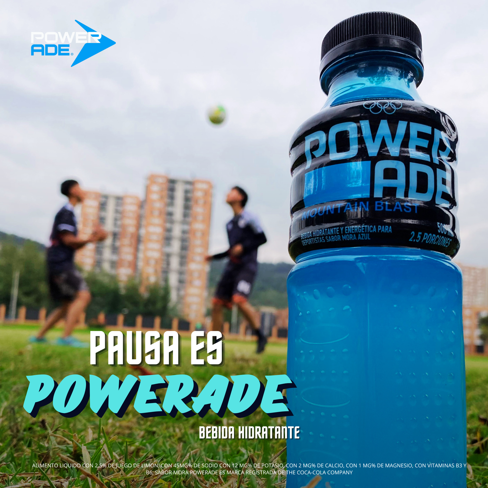
Poster Publicitario Powerade
Diseño de pieza publicitaria conceptual para Powerade realizada en la clase de Video y Fotografía. El proyecto se enfocó en composición visual, tratamiento de color y estética comercial deportiva para transmitir energía e impacto visual.

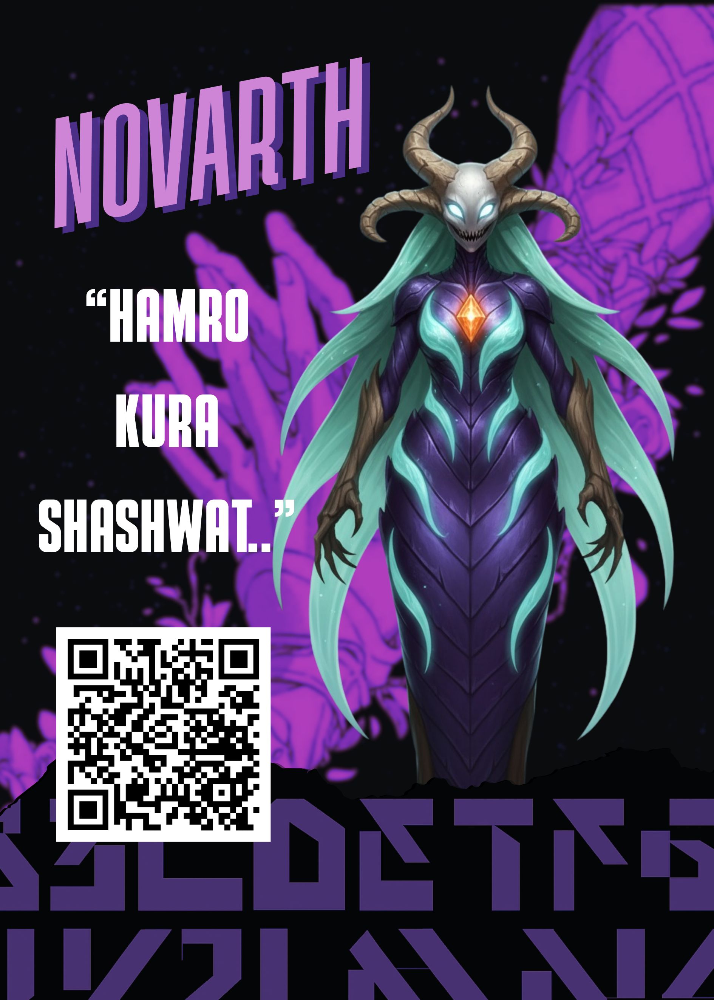

Poster para Campaña de Expectativa
Serie de posters desarrollados para una campaña de expectativa de un cómic original realizado en la clase de Producción Multimedia. El proyecto exploró composición visual, narrativa gráfica y estética promocional para generar intriga antes del lanzamiento.

Poster Publicitario AirFryer
Diseño de pieza publicitaria desarrollada para un infomercial académico enfocado en la Airfryer Oster 360. Me encargué de la composición visual y estética promocional de la campaña, trabajando iluminación, color y presentación del producto para transmitir una imagen moderna y comercial.
UI | Prototipado
Interfaces y experiencias enfocadas en UX/UI.
DecidIA
Aplicación móvil diseñada para ayudar a los usuarios en la toma de decisiones mediante inteligencia artificial. Realicé el diseño completo de interfaz en Figma, incluyendo identidad visual, diseño del logo y flujo de navegación, buscando una experiencia moderna, clara y accesible para dispositivos móviles.
Ver prototipo completoCapyApp
Aplicación móvil enfocada en acompañamiento emocional y bienestar personal. Desarrollé el diseño visual de los capybaras como identidad principal de la app, además del prototipado UI/UX en Figma, construyendo una experiencia cálida, amigable e intuitiva orientada al apoyo emocional diario.
Ver prototipo completoHusband Store
Prototipo web enfocado en la visualización y compra de figuras coleccionables y husbandos. Desarrollé el prototipado UI/UX en Figma, creando una interfaz visualmente atractiva con enfoque en navegación sencilla, catálogo de productos y experiencia de usuario para entorno desktop/web.
Ver prototipo completo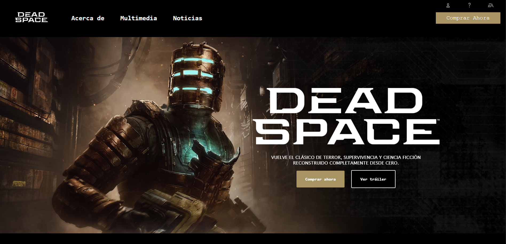
Dead Space UI Replica
Réplica de la interfaz web inspirada en Dead Space, desarrollada en HTML, y CSS. Este proyecto se enfoca en la construcción de layout, diseño oscuro temático, componentes UI interactivos y fidelidad visual al universo del juego.
Ver proyecto en vivoIlustración Digital
Ilustración digital y composición artística.
Mini Bilia de Personaje & Narrativa
Ilustración digital y desarrollo de una mini biblia de personaje, explorando diseño conceptual, estilo visual y construcción narrativa para proyectos creativos, manejando sombras y mejor diseño de personaje con proporciones más estilizadas.
Ver PDF completoMini Biblia de Personajes
Ilustración digital y desarrollo de una mini biblia de personajes compuesta por dos personajes originales,
uno de mis primeros proyectos en esta área.
A través de este trabajo exploré el diseño conceptual, la construcción de personalidad visual y la narrativa
básica aplicada al diseño de personajes.
Es una pieza a la que le tengo especial cariño, ya que representa mis inicios en la creación de mundos y
personajes, y el comienzo de mi camino en la ilustración y la narrativa visual.
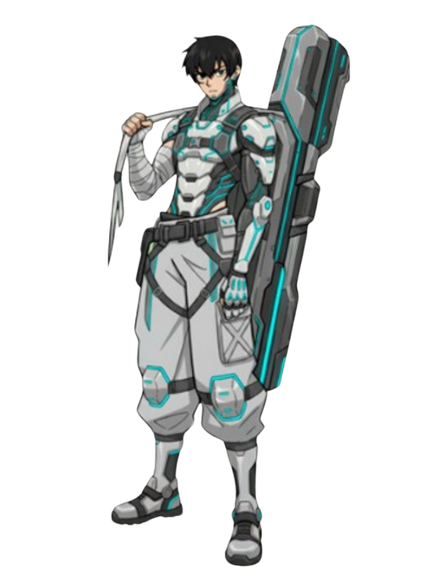
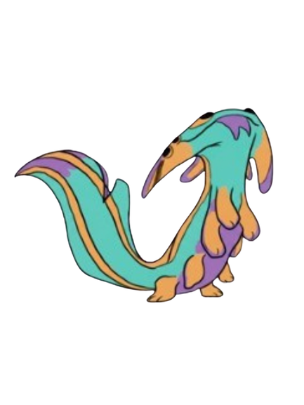
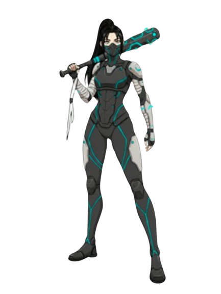
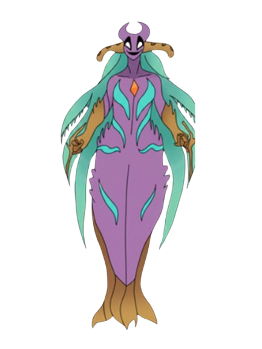
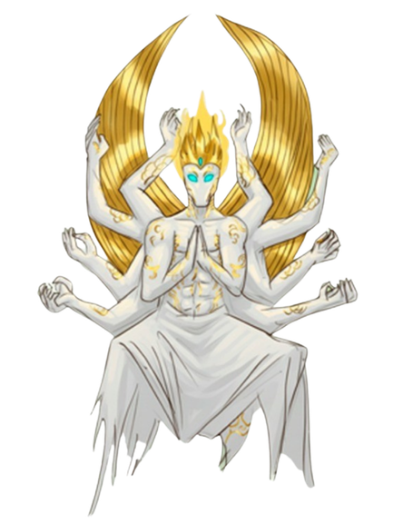
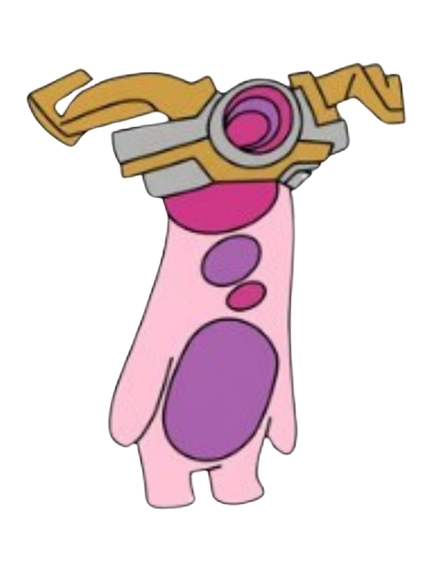
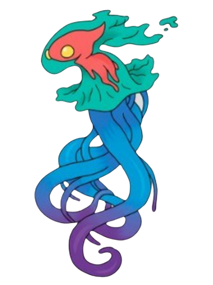
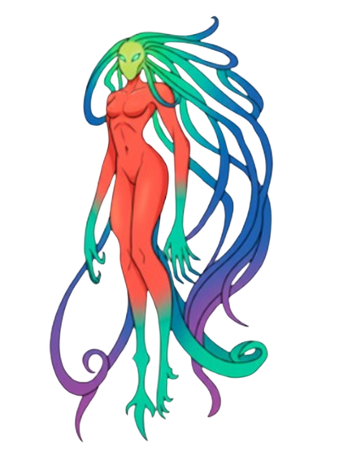
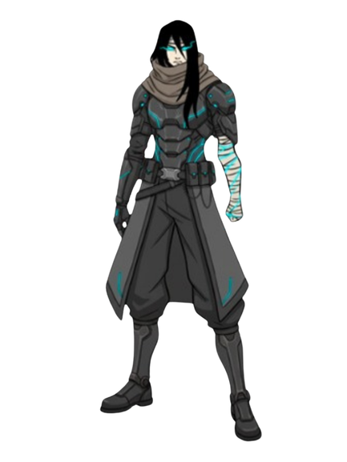
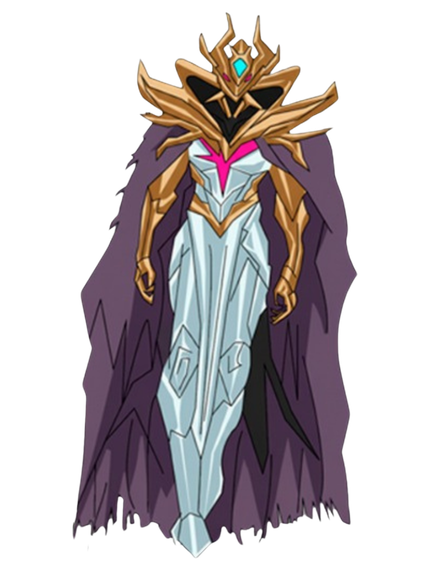
.png)
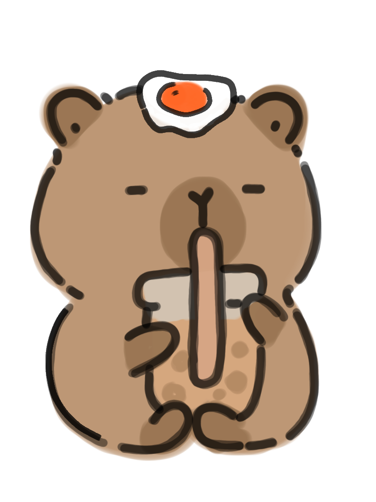
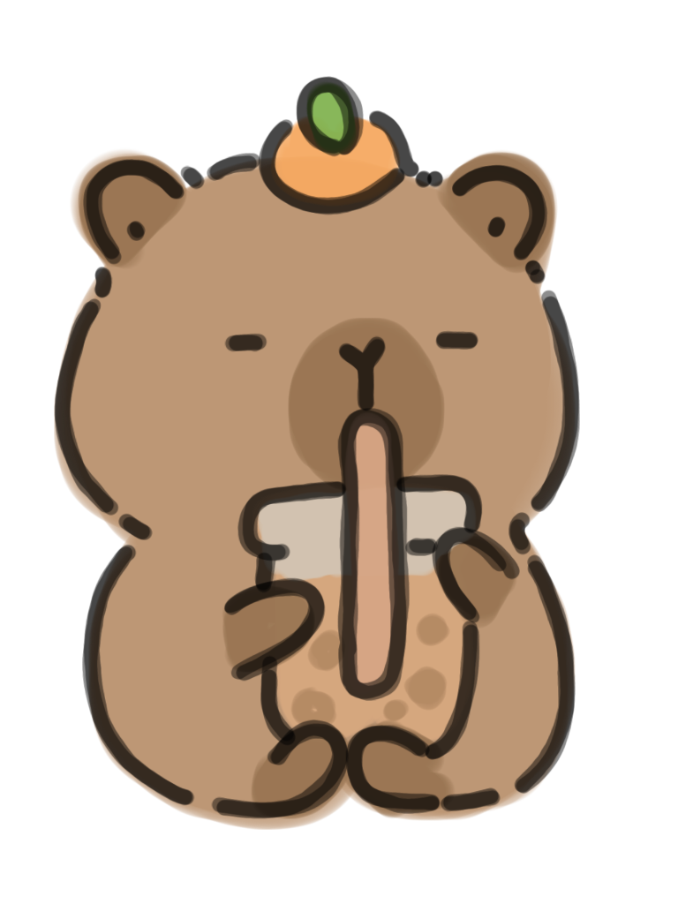
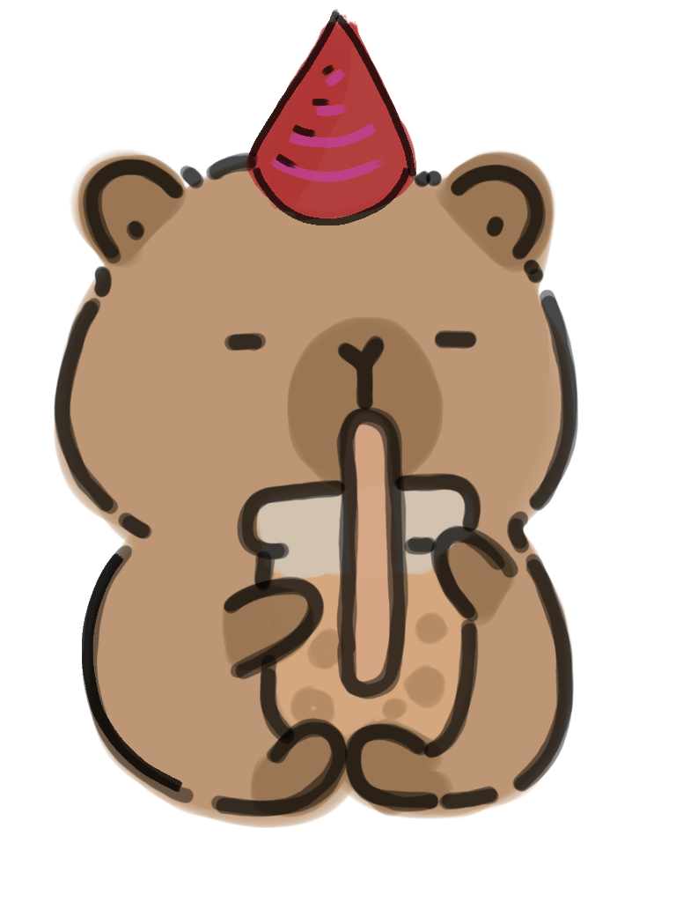
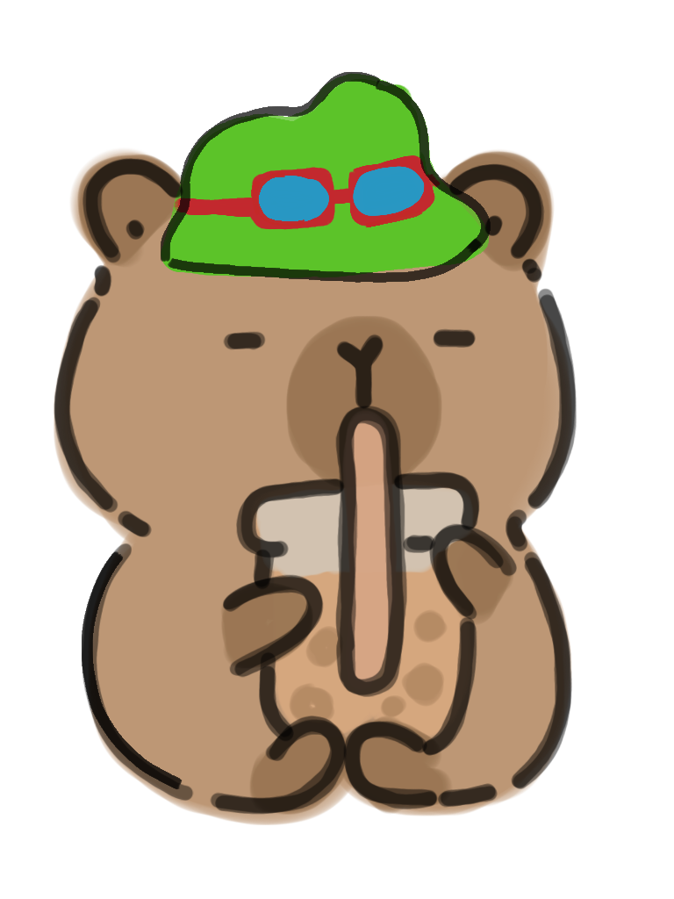
Sketchbook & Concept Art
Exploración de ideas visuales a través de bocetos digitales, estudios de personajes y prácticas de composición para desarrollo de ilustración y narrativa visual.